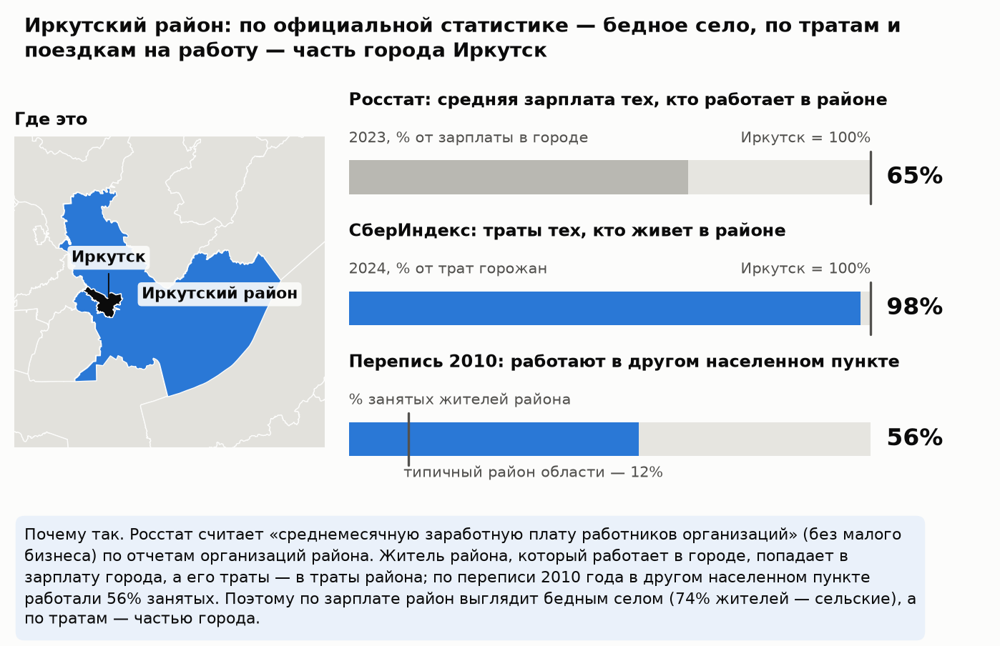
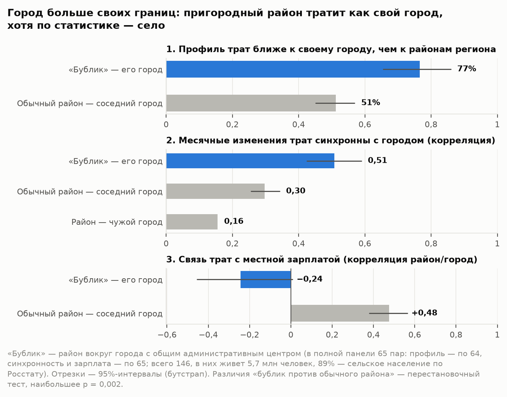
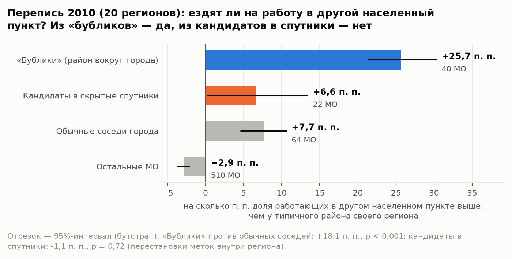
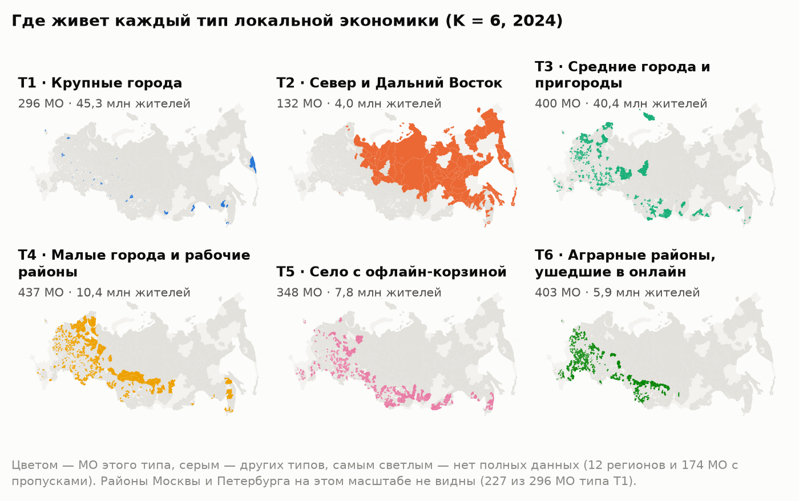
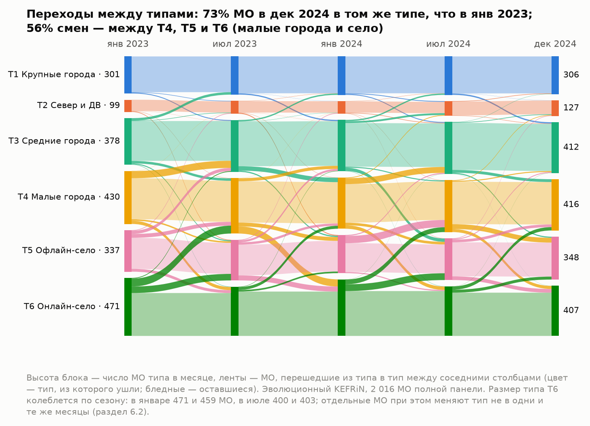

Типы локальных экономик России по тратам жителей: динамическая атрибутированная сеть муниципальных образований. Краткая версия методологического отчета. Онлайн-конкурс СберИндекса 2026, номинация «Кластеризация». Автор: Дмитрий Юшков.
Как читать. Здесь главная линия работы на нескольких страницах. Все числа те же, что в полном отчете: оба собираются
из одних выходов пайплайна. Ссылки «раздел N» ведут в полный отчет — report.pdf рядом с этим файлом и на лендинге
https://demondevils666.github.io/research-2026/. Код, конфиги и инструкция по запуску — https://github.com/demondevils666/research-2026.
Коротко.
- Что построено. Сеть из 2 016 муниципальных образований (МО). Узел описан структурой и уровнем трат жителей по данным СберИндекса за 24 месяца. Ребро соединяет соседей по границе, и вес ребра тем больше, чем ближе их центры по дороге. Совместная кластеризация признаков и сети (KEFRiN) выделяет 6 типов местных экономик; число типов и вес сети выбраны согласованно, по воспроизводимости на подвыборках.
- Главная находка: город больше своих границ. Ее можно проследить в три шага.
- Факт. У 76% районов вокруг городов с общим административным центром («бубликов») профиль трат ближе к своему городу, чем к районам своего региона (88 пар); у обычных соседних районов — у 51%. При этом по Росстату 89% жителей «бубликов» — сельское население. Сильнее всего это у столиц регионов: 20 «бубликов» из 20 против 42% у обычных соседей. У остальных городов различие по профилю меньше и статистически незначимо (66% против 55%; разбивка — по 64 парам полной панели), но по переписи и оттуда чаще ездят на работу в другой населенный пункт (раздел 2.1).
- Механизм. Росстат считает зарплату по месту работы (по организациям на территории МО), а СберИндекс траты — по месту жительства. Если житель района работает в городе, его зарплата попадает в статистику города, а траты — в статистику района. Перепись 2010 года это подтверждает: в «бубликах» доля работающих в другом населенном пункте на 25,7 п. п. выше, чем у типичного района своего региона, у обычных соседей города — на 7,7 п. п. (20 регионов).
- Следствие. Официальная статистика не видит пригородную экономику: по типу населенного пункта «бублики» — село, а зарплата их жителей засчитывается городу, где они работают. Во всех 146 «бубликах» живут 5,7 млн человек. Реальные города больше официальных: у 149 городов, где у пригорода есть данные о тратах, официально 32,7 млн жителей, а вместе с «бубликами» — 36,2 млн. Для оценки благосостояния, программ поддержки и планирования агломераций нужен взгляд по месту жительства — его дают траты.
- С отчетом лаборатории СберИндекса это согласуется. Все 4 пригорода Дальнего Востока, которые она назвала в своем отчете, попали в наши «городские» типы (T1, T3). Районов всего 4, и у 2 из них города нет в данных, поэтому это сверка, а не строгая проверка.
- Вывод о методе. Тип территории задает поведение жителей, а не соседство: при выбранном весе сети α = 0,6 разбиение почти совпадает с разбиением только по тратам (ARI 0,97): сеть передвинула лишь 28 МО из 2 016 — пограничных, а если вес сети в KEFRiN больше 0,6, типы перестают воспроизводиться. Это вывод для нашей постановки — KEFRiN, сеть соседства, 6 типов на всю страну.
| Шаг | Что делаем | Раздел |
|---|---|---|
| 1. Данные | 2 016 МО × 24 месяца безналичных трат жителей по шести категориям (СберИндекс). Росстат, перепись 2010 года и отчеты лаборатории в расчет типов не входят — ими типы только проверяются | 1.1 |
| 2. Признаки | CLR шести долей + ln(траты) − медиана месяца: структура трат и уровень относительно страны в том же месяце (без инфляции и сезона) | 1.2 |
| 3. Сеть | w = общая граница × e^(−км/τ), τ = 67,7 км: соседи по границе, чем ближе центры по дороге, тем сильнее связь; сеть не зависит от трат. Еще пять правил ребра — для сравнения | 1.3, 4.3 |
| 4. KEFRiN | Совместная кластеризация трат и сети: K = 6 — по воспроизводимости на подвыборках, вес сети α = 0,6 — той же проверкой | 4, прил. Б |
| 5. Динамика | Эволюционный KEFRiN по месяцам (β = 0,5) и схема MONIC: смены типа у МО, судьба типов целиком, содержание типов | 6 |
| 6. Качество и проверка | Шесть индексов конкурса, сравнение 8 методов на 10 seed, устойчивость, проверка Росстатом, переписью 2010 года и отчетом лаборатории | 3, 5, 8 |
| Вопрос | Короткий ответ | Подробно |
|---|---|---|
| Что именно найдено? | Шесть типов местных экономик — от крупных городов до аграрных районов, где доля маркетплейсов выше всего. Пригороды тратят как свой город, хотя статистика считает их селом. Поведение важнее географии: сеть почти не меняет типы и не создает их. | разделы 2–4 |
| Почему этому можно доверять? | Проверка данными, которые в расчет не входили: Росстат и перепись 2010 года; с ними согласуется отчет лаборатории. Тип сравниваем с простой базой — группами по одному уровню трат. Отрицательные результаты показаны: налоговый след пригородов, скрытые спутники по переписи, незначимые различия методов. Прогон воспроизводится байт в байт. | разделы 2, 3.2, 5.4, 8, 11 |
| Как это использовать дальше? | Сверять зарплату Росстата с тратами СберИндекса, чтобы не принять пригород за бедное село; сравнивать МО с похожими из других регионов («двойниками»): искать у них применимый опыт и сравнивать рост трат. | раздел 9 |

Рис. 1. Пример главной находки: Иркутский район по данным Росстата, СберИндекса и переписи 2010 года. По тратам район относится к тому же типу, что и его город (T1).«Бублик» — район вокруг города с общим административным центром (Иркутский район вокруг Иркутска). Контроль — обычные районы, которые тоже граничат с городским округом своего региона. Если район похож на город только потому, что граничит с ним, контроль покажет то же самое.
| Измерение | «Бублик» — свой город | Обычный район — соседний город | Тест |
|---|---|---|---|
| Профиль трат ближе к своему городу, чем к районам своего региона (все пары с данными: 88 «бубликов», 283 — контроля) | 76% (ДИ 67–84%) | 51% | p < 0,001 |
| Синхронность помесячных изменений трат с городом (средняя корреляция; полная панель: 65 и 286 пар) | 0,51 | 0,30; с чужим городом: 0,16 | p < 0,001 |
| Траты идут за местной зарплатой Росстата? (корреляция отношений район/город) | −0,24: связи нет | 0,48 | p < 0,001 |

Рис. 2. Три меры: «бублик» против обычного соседнего района (полная панель). В полном отчете — рис. 2.
Рис. 3. Перепись 2010 года: доля работающих в другом населенном пункте по группам МО. В полном отчете — рис. 3.| Тип | МО | Жителей, млн | Траты, ₽/мес. (медиана) | Чем отличается от средней России |
|---|---|---|---|---|
| T1 Крупные города | 296 | 45,3 | 49 926 | общепит +128%, траты +65%, транспорт +29% |
| T2 Север и Дальний Восток | 132 | 4,0 | 39 394 | маркетплейсы −34%, траты +31%, прочее +25% |
| T3 Средние города и пригороды | 400 | 40,4 | 32 723 | общепит +37%, транспорт +14%, траты +9% |
| T4 Малые города и рабочие районы | 437 | 10,4 | 24 850 | общепит −36%, транспорт −26%, траты −17% |
| T5 Село с офлайн-корзиной | 348 | 7,8 | 23 786 | общепит −39%, траты −23%, транспорт +10% |
| T6 Аграрные районы, ушедшие в онлайн | 403 | 5,9 | 21 861 | общепит −63%, траты −28%, прочее −23% |

Рис. 4. Где лежит каждый тип. В полном отчете — рис. 5.| Метод | SW ↑ | CH ↑ | S_Dbw ↓ | AVI ↑ | AVU ↓ | MQ ↑ | Ср. ранг (10 seed) |
|---|---|---|---|---|---|---|---|
| KEFRiN, физическая сеть | 0,221 | 675 | 0,63 | 0,559 | 0,472 | 0,386 | 2,50 |
| k-means | 0,220 | 675 | 0,72 | 0,535 | 0,472 | 0,371 | 3,33 |
| KEFRiN, сеть сходства | 0,220 | 670 | 0,63 | 0,542 | 0,475 | 0,385 | 3,33 |
| CANUS, физическая сеть | 0,238 | 646 | 0,66 | 0,553 | 0,466 | 0,341 | 4,67 |
| спектральная, граф сходства | 0,162 | 524 | 0,72 | 0,615 | 0,535 | 0,364 | 5,00 |
| GMM | 0,152 | 435 | 0,87 | 0,581 | 0,448 | 0,415 | 5,50 |
| Leiden, физическая сеть | −0,129 | 28 | 0,88 | 1,000 | 0,250 | 0,119 | 5,50 |
| Leiden, сеть сходства | 0,126 | 508 | 1,03 | 0,533 | 0,563 | 0,375 | 6,17 |
Эволюционный KEFRiN (β = 0,5) меняет тип у 6,2% МО в месяц, независимая кластеризация каждого месяца — у 20,4%. В декабре 2024 в том же типе, что в январе 2023, 73% МО; из 554 сменивших тип 56% переходят между T4, T5 и T6 — малыми городами и селом. По схеме MONIC все 6 типов «выживают» каждый месяц; при сглаживании и фиксированном K это ожидаемо, поэтому MONIC здесь — проверка согласованности (раздел 6).

Рис. 5. Переходы между типами за два года. В полном отчете — рис. 10.
Пять главных; полный список — с тем, почему каждое важно и что мы сделали, — в разделе 10 полного отчета.
Параметры — configs/*.yaml, seed 42, данные сверяются с data/raw/MANIFEST.json по sha256. Все пересобирается
скриптом scripts/run_all.py байт в байт, кроме времени счета и даты PDF; команды запуска — в README и разделе 11.